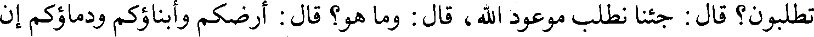
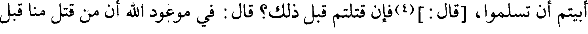
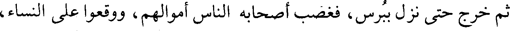
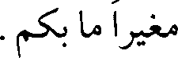
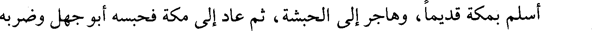
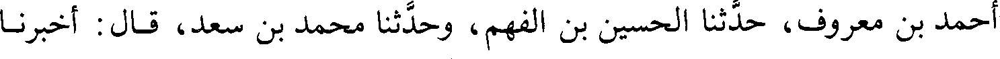
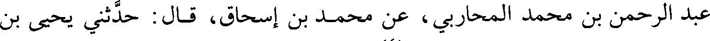
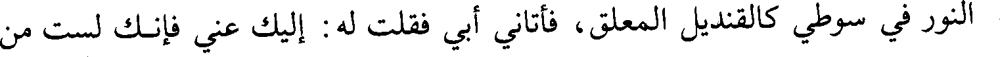

File: 000050.gt.txt (if the image is defective, simply delete all Arabic text and the line will be excluded)

بأتباعهم أكثر من مائتي ألف.
File: 000051.gt.txt (if the image is defective, simply delete all Arabic text and the line will be excluded)

فلما(3) فصل رستم من ساباط أخذ له رجل من أصحاب سعد، فقال له: ما جئتم
File: 000052.gt.txt (if the image is defective, simply delete all Arabic text and the line will be excluded)

تطلبون؟ قال: جئنا نطلب موعود الله، قال: وما هو؟ قال: أرضكم وأبناؤكم ودماؤكم إن
File: 000053.gt.txt (if the image is defective, simply delete all Arabic text and the line will be excluded)

أبيتم أن تسلموا، [قال:](4) فإن قتلتم قبل ذلك؟ قال: في موعود الله أن من قتل منا قبل
File: 000054.gt.txt (if the image is defective, simply delete all Arabic text and the line will be excluded)

ذلك دخل الجنة، وينجز لمن بقي منا ما قلت لك، فقتله.
File: 000055.gt.txt (if the image is defective, simply delete all Arabic text and the line will be excluded)

ثم خرج حتى نزل ببرس، فغضب أصحابه الناس أموالهم، ووقعوا على النساء،
File: 000056.gt.txt (if the image is defective, simply delete all Arabic text and the line will be excluded)

وشربوا الخمور، فقام إلى الناس، فقال: إن الله كان ينصركم على عدوكم لحسن
File: 000057.gt.txt (if the image is defective, simply delete all Arabic text and the line will be excluded)

السيرة، وكف الظلم والوفاء بالعهد، فأما إذا تحولتم عن هذه الأعمال فلا أرى الله إلا
File: 000058.gt.txt (if the image is defective, simply delete all Arabic text and the line will be excluded)

مغيرا ما بكم.
File: 000060.gt.txt (if the image is defective, simply delete all Arabic text and the line will be excluded)

أهل الصفة إذا أمسوا ينطلق الرجل بالرجل، والرجل بالرجلين، والرجل بالخمسة، فأما
File: 000061.gt.txt (if the image is defective, simply delete all Arabic text and the line will be excluded)

سعد بن عبادة فكان ينطلق بثمانين كل ليلة.
File: 000062.gt.txt (if the image is defective, simply delete all Arabic text and the line will be excluded)

بكر محمد بن عبد الله الشافعي، حدثنا إبراهيم بن إسحاق الحربي، حدثنا مسدد،
File: 000063.gt.txt (if the image is defective, simply delete all Arabic text and the line will be excluded)

حدثنا حماد، عن هشام](1)، عن ابن سيرين:
File: 000064.gt.txt (if the image is defective, simply delete all Arabic text and the line will be excluded)

أن سعد بن عبادة كان يبسط ثوبه ويقول: اللهم وسع علي، فإنه لا يسعني إلا
File: 000065.gt.txt (if the image is defective, simply delete all Arabic text and the line will be excluded)

سعد بن عبادة كان يدعو: اللهم هب لي حمدا ومجدا، لا مجد إلا بفعال، ولا فعال إلا
File: 000066.gt.txt (if the image is defective, simply delete all Arabic text and the line will be excluded)

بمال، اللهم لا يصلحني القليل، ولا أصلح عليه.
File: 000067.gt.txt (if the image is defective, simply delete all Arabic text and the line will be excluded)

يحيى؛ يعني ابن أبي كثير](3) قال: كان للنبي صلعم من سعد كل يوم جفنة تدور معه حيث
File: 000068.gt.txt (if the image is defective, simply delete all Arabic text and the line will be excluded)

دار، وكان يقول: اللهم ارزقني مالا فلا يصلح الفعال إلا بمال.
File: 000069.gt.txt (if the image is defective, simply delete all Arabic text and the line will be excluded)

قال علماء السير: أسلم سعد وشهد العقبة مع السبعين، وكان أحد النقباء الاثني
File: 000070.gt.txt (if the image is defective, simply delete all Arabic text and the line will be excluded)

عشر، وتهيأ للخروج إلى بدر فنهش فأقام، وشهد أحدا والمشاهد بعدها مع رسول
File: 000071.gt.txt (if the image is defective, simply delete all Arabic text and the line will be excluded)

الله صلعم.
File: 000072.gt.txt (if the image is defective, simply delete all Arabic text and the line will be excluded)

ولما توفي رسول الله صلعم اجتمعت الأنصار فأمروه، فلما بويع لأبي بكر لم يبايعه
File: 000073.gt.txt (if the image is defective, simply delete all Arabic text and the line will be excluded)

سعد، ولا بايع عمر، وخرج إلى الشام، ومات بحوران.
File: 000074.gt.txt (if the image is defective, simply delete all Arabic text and the line will be excluded)

وكان سبب موته أنه جلس يبول في نفق، فاقتتل من ساعته، ووجدوه قد اخضر
File: 000075.gt.txt (if the image is defective, simply delete all Arabic text and the line will be excluded)

جلده، وسمع غلمان بالمدينة قائلا يقول من بئر فقال(4):
File: 000076.gt.txt (if the image is defective, simply delete all Arabic text and the line will be excluded)

186
File: 000077.gt.txt (if the image is defective, simply delete all Arabic text and the line will be excluded)

176-سلمة بن هشام بن المغيرة(1):
File: 000078.gt.txt (if the image is defective, simply delete all Arabic text and the line will be excluded)

أسلم بمكة قديما، وهاجر إلى الحبشة، ثم عاد إلى مكة فحبسه أبو جهل وضربه
File: 000079.gt.txt (if the image is defective, simply delete all Arabic text and the line will be excluded)

وأجاعه، وكان رسول الله صلعم يدعو له في صلاته، يقول: «اللهم انج سلمة بن هشام،
File: 000080.gt.txt (if the image is defective, simply delete all Arabic text and the line will be excluded)

وعياش بن ربيعة، والوليد بن الوليد وضعفة المسلمين؟».
File: 000081.gt.txt (if the image is defective, simply delete all Arabic text and the line will be excluded)

أفلت سلمة فلحق برسول الله صلعم يوم الخندق، فلما بعث أبو بكر رضي الله عنه
File: 000083.gt.txt (if the image is defective, simply delete all Arabic text and the line will be excluded)

177-سليط بن قيس بن عمرو بن عبيد(2) :
File: 000084.gt.txt (if the image is defective, simply delete all Arabic text and the line will be excluded)

شهد بدرا والمشاهد كلها مع رسول الله صلعم، وقتل يوم جسر أبي عبيد](3).
File: 000085.gt.txt (if the image is defective, simply delete all Arabic text and the line will be excluded)

178-عثمان بن عامر بن عمرو بن كعب، أبو قحافة:
File: 000086.gt.txt (if the image is defective, simply delete all Arabic text and the line will be excluded)

أبو أبي بكر الصديق رضي الله عنه، أسلم يوم الفتح.
File: 000087.gt.txt (if the image is defective, simply delete all Arabic text and the line will be excluded)

أحمد بن معروف، حدثنا الحسين بن الفهم، وحدثنا محمد بن سعد، قال: أخبرنا
File: 000088.gt.txt (if the image is defective, simply delete all Arabic text and the line will be excluded)

عبد الرحمن بن محمد المحاربي، عن محمد بن إسحاق، قال: حدثني يحيى بن
File: 000089.gt.txt (if the image is defective, simply delete all Arabic text and the line will be excluded)

عباد بن عبد الله بن الزبير، عن أبيه،](4) عن أسماء بنت أبي بكر، قالت(5):
File: 000090.gt.txt (if the image is defective, simply delete all Arabic text and the line will be excluded)

لما دخل رسول الله صلعم مكة واطمأن وجلس في المسجد أتاه أبو بكر بأبي قحافة،
File: 000091.gt.txt (if the image is defective, simply delete all Arabic text and the line will be excluded)

فلما رآه رسول الله صلعم قال: «يا أبا بكر، ألا تركت الشيخ حتى أكون أنا الذي أمشي
File: 000092.gt.txt (if the image is defective, simply delete all Arabic text and the line will be excluded)

إليه؟» فقال: يا رسول الله هو أحق أن يمشي إليك من أن تمشي إليه. فأجلسه رسول
File: 000093.gt.txt (if the image is defective, simply delete all Arabic text and the line will be excluded)

الله صلعم بين يديه ووضع يده على قلبه، ثم قال: «يا أبا قحافة، أسلم تسلم». قال:
File: 000094.gt.txt (if the image is defective, simply delete all Arabic text and the line will be excluded)
154
File: 000095.gt.txt (if the image is defective, simply delete all Arabic text and the line will be excluded)

مطاع في قومي، وإني راجع إليهم فداعيهم إلى الإسلام، فادع الله أن يكون لي عونا
File: 000096.gt.txt (if the image is defective, simply delete all Arabic text and the line will be excluded)

عليهم، فقال: «اللهم اجعل له آية».
File: 000097.gt.txt (if the image is defective, simply delete all Arabic text and the line will be excluded)

فخرجت إلى قومي حتى إذا كنت بثنية تطلعني على الحاضر وقع نور بين عيني
File: 000098.gt.txt (if the image is defective, simply delete all Arabic text and the line will be excluded)

مثل المصباح، فقلت: اللهم في غير وجهي، فإني أخشى أن يظنوا بي مثلة وقعت في
File: 000099.gt.txt (if the image is defective, simply delete all Arabic text and the line will be excluded)

وجهي لفراق دينهم، فتحول النور فوقع في رأس سوطي، فجعل الحاضر يتراءون ذلك
File: 000100.gt.txt (if the image is defective, simply delete all Arabic text and the line will be excluded)

النور في سوطي كالقنديل المعلق، فأتاني أبي فقلت له: إليك عني فإنك لست من
File: 000101.gt.txt (if the image is defective, simply delete all Arabic text and the line will be excluded)

ديني، ولست منك، قال: ولم يا بني؟ قلت: إني أسلمت واتبعت دين محمد، قال: يا